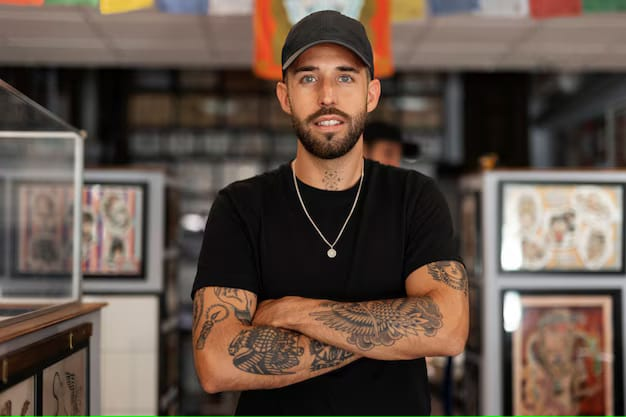
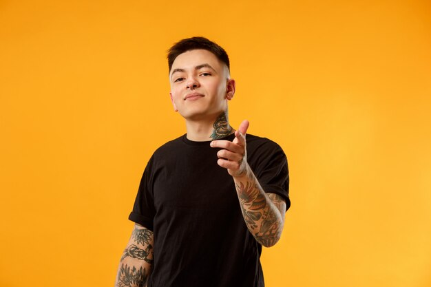
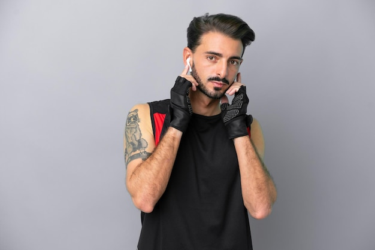

Conoce a Nuestro Equipo

Diego "Ink" García
Diego es un tatuador especializado en tatuajes de estilo realista. Con más de 8 años de experiencia, es conocido por su habilidad para capturar detalles increíbles y dar vida a los tatuajes más complejos.

Juan "Shadow" Morales
Juan es un experto en tatuajes de sombreado y blackwork. Su enfoque en los contrastes y las sombras le ha ganado una reputación como uno de los mejores en su campo.

Carlos "Flora" Torres
Carlos es un talentoso tatuador con una pasión por los diseños florales y botánicos. Su habilidad para combinar colores y crear tatuajes vibrantes lo hace destacar en el mundo del tatuaje.